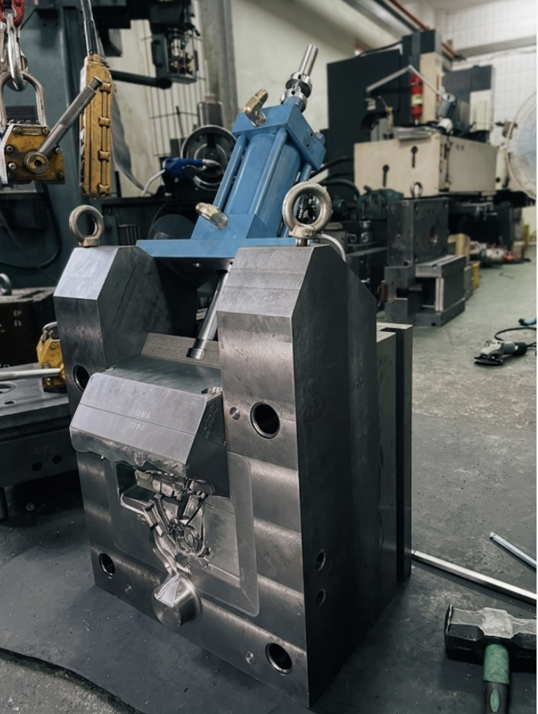
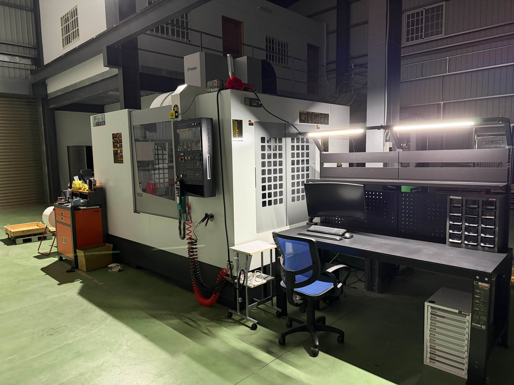
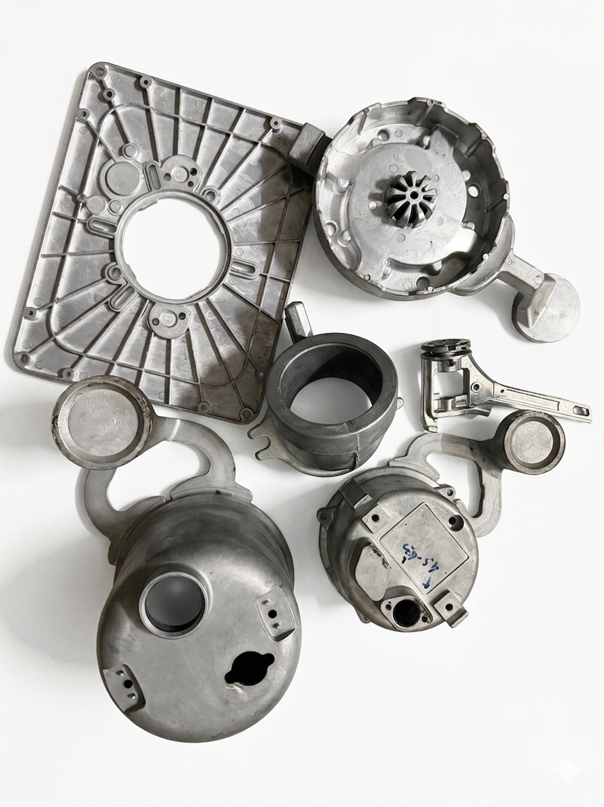
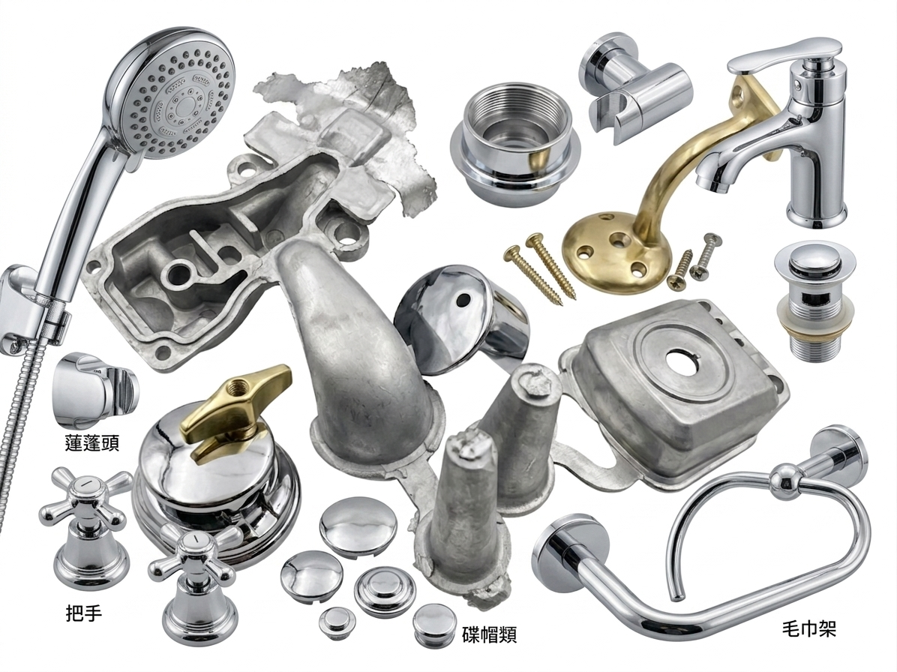

鋅合金壓鑄
適合尺寸穩定、細節要求高的五金零件與外觀件。

Service
從原型、模具討論、壓鑄加工到成品代工，提供彈性的製造支援。
適合尺寸穩定、細節要求高的五金零件與外觀件。
支援輕量化、高強度與耐用性的金屬產品需求。
協助客戶整合零件加工、組裝與成品交付流程。
提供 3D 列印打樣，讓設計驗證更快速、開發更有效率。
Equipment
廠內配置 CNC 模具加工設備，結合傳統精密加工技術，支援模具製作、零件加工、產品開發與打樣需求。

支援模具型腔、曲面加工與精密零件製作，提升尺寸穩定性與加工品質。
從開發打樣到模具修整，可縮短溝通時間，提升產品開發效率。
搭配傳統車銑加工經驗，能彈性處理備料、修模與特殊零件需求。
Products & Applications
我們的鋅合金與鋁合金壓鑄產品，廣泛應用於衛浴五金、建築五金與各類客製化金屬零件。


Contact
若您有壓鑄零件、五金成品或產品打樣需求，可以提供圖面、樣品或需求方向， 我們將協助評估合適的製作方式。